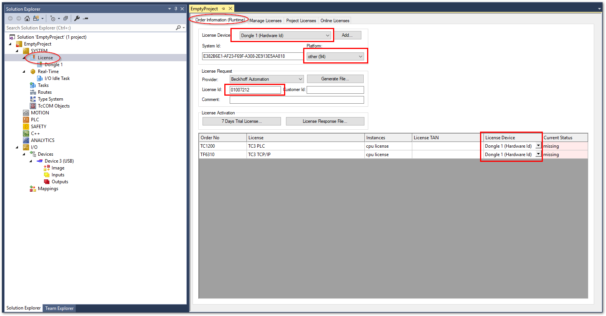
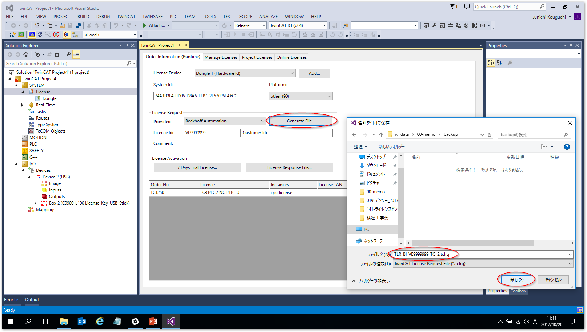
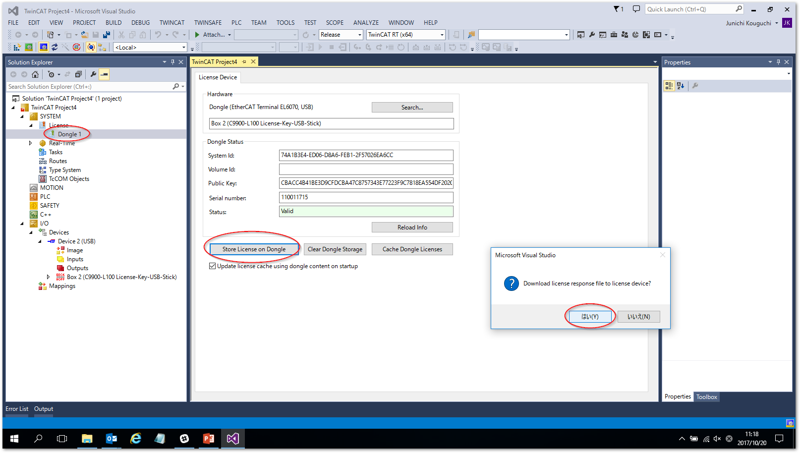

ドングル作成手順#
TwinCATがインストールされたPCを用意する#
ドングルをセットアップするには、TwinCAT XAE がインストールされたPCが必要です。また、動作確認を行うためにドングルを装着する予定のTwinCAT XARがインストールされたIPCをご用意ください。
ラインセンスアクティベート方法#
はじめに、
C9900-L100ドングルをターゲットPCのUSBに挿してください。ターゲットPCとは、XAEの接続先PCとなります。リモート接続の場合は、接続先のPCのUSBポートに接続してください。Solution explorer から
SYSTEM - Licenseを開いて、License DeviceからAdd..ボタンを押します。

Licenseの下にDongle 1というメニューが追加されるため、これをクリックして開き、Search...ボタンを押して、現れたドングルのデバイス行を選択してOKボタンを押します。
Activate stored license(s) on targetのメッセージにOKボタンを押します。この操作により次図の通り
C9900-L100メディア情報が表示されます。
注釈
ここに表示される
System idは、USBドングルのシステムIDです。このIDにライセンスを紐づける事が重要です。後ほどライセンスリクエストファイルの確認の際に参照しますので覚えておいてください。左側サイドメニューのツリーから、
Dongle 1の上の階層のLicenseに戻り、Manage Licensesタブを開きます。以下の設定を行ってください。Disable automatic detection of required licenses for projectTrue
Add licenseあらかじめ購入したLicenseを選択してチェックを入れる
警告
有効にできるライセンスは、あらかじめ購入したものに限ります。それ以外のものを指定した場合、このあとの手順でサーバへのアクティベート申請でエラーになります。
次に
Order information (Runtime)のタブに移り、次の通り値を設定します。License DeviceDongle 1 (Hardware Id)に切り替える。Platform購入した際に指定したパフォーマンスレベル番号を入力します。
License ID発行されたライセンスIDを入力する。
- 選択した各ライセンスの
License Device 全て
Dongle 1 (Hardware Id)に切り替える。

警告
Platform設定は、かならず購入時に指定したものと同じものを設定してください。指定したパフォーマンスレベル番号より下位レベルのものを誤って設定してアクティベートリクエストを行った場合、異常とならずその設定でライセンスが発行されてしまいます。これにより目的とするアーキテクチャのPCがこのパフォーマンスレベル要件を満たさずライセンスが有効とならなくなる恐れがあります。さらに、いちど発行したライセンスはドイツ本社へ問合せの上修正する必要が生じます。特に慎重に設定を行ってください。必要項目の設定が完了したら、
Generate File...ボタンを押して*.tclrqファイルを保存します。警告
保存するファイル名は、全体で23文字以内になるようにしてください。これを越える文字数のファイル名は、アクティベートする際にエラーとなります。
このあと、保存したファイルをアクティベート申請先メールアドレスへ送りますが、その前に保存したファイルが間違えなく設定が反映されているか確認します。このファイルはXMLフォーマットのテキストファイルとなっていますので、XMLエディタ、または、メモ帳などのテキストエディタで開いて、リスト 7.3の通り
LicenseInfoタグ内の、<<パフォーマンスレベル番号2桁の数字>>と、<<ライセンスID>>と、5の項目で確認した<<Dongle USB のシステムID>>の部分の設定が正しく反映されているか確認してください。<?xml version="1.0"?> <TcLicenseInfo xmlns:xsi="http://www.w3.org/2001/XMLSchema-instance" xsi:noNamespaceSchemaLocation="http://www.beckhoff.com/schemas/2011/11/TcLicenseInfo"> <TargetInfo> ... </TargetInfo> <LicenseInfo> <SystemId Level="<<パフォーマンスレベル番号2桁の数字>>">{<<Dongle USB のシステムID>>}</SystemId> <PurchaseOrder><![CDATA[<<ライセンスID>>]]></PurchaseOrder> <IssueTime>YYYY-MM-DDThh:mm:ss</IssueTime> <License ManuallyAdded="true"> <LicenseId>{********-****-****-****-************}</LicenseId> <Name>TC3 PLC</Name> <OrderNo>TC1200</OrderNo> </License> <License ManuallyAdded="true"> <LicenseId>{********-****-****-****-************}</LicenseId> <Name>TC3 TCP/IP</Name> <OrderNo>TF6310</OrderNo> </License> </LicenseInfo> </TcLicenseInfo>
次の宛先に保存した **
*.tclrqファイルを添付したメール** をおくります。タイトル、本文どちらも空のままでも構いません。何等かの文字があっても無視されます。注釈
メールの送付先:TCLicense@beckhoff.com
メール送信後、10秒以内にアクティベートされたライセンスファイル
*.TCLRSが返信されてきます。この添付ファイルを保存してください。再度、
Dongle 1ツリーをクリックし、Store License on Dongleボタンを押します。確認ダイアログが現れますので、OKをおしてください。エクスプローラウィンドウが現れますので、メールで返信された
*.TCLRSファイルを開きます。正常に読み込まれると次の通り確認ダイアログ現れます。OKを押して次へ進んでください。
注釈
この段階ではまだライセンスが有効となったUSBドングルがIPC上に展開されていません。ので、この状態でConfigモードボタンを押しても有効となりません。必ず次項の最初の2ステップを実行してください。
動作確認#
ドングルに書き込んだライセンスが正しく機能するか、IPCに装着して次の手順で確認する必要があります。
警告
動作確認にはできるだけ装着予定のIPCにて行ってください。
装着予定のIPCがご用意できない場合、パフォーマンスレベルと異なる環境で動作確認を実施する可能性があります。パフォーマンスレベルが整合しているかどうかは、後述するキャッシュファイルを開いて正しいパフォーマンスレベルとなっているか目視で確認する必要があります。
前項のドングルへのライセンス書込みを実施したまま続けて頂いて構いません。
Search...ボタンを押して、現れたドングルのデバイス行を選択してOKボタンを押します。Activate stored license(s) on targetのメッセージにOKボタンを押します。Config modeボタンを押してください。確認ダイアログが現れますので、OKボタンを押します。
Config modeへ移行することで、
Current Status欄が更新されます。Valid (dongle)となっていれば正しくライセンスがDongleへ書き込まれた事が確認できます。
IPCの以下のフォルダ上にライセンスキャッシュが出来上がっているので、これを作業履歴として大切に保存しておく。
C:¥TwinCAT¥3.1¥Target¥Licence cache_<<DongleのBTN番号>>_<<ライセンスレスポンスファイル名>>.TCLRS
装着予定のIPCで動作確認を行っていない場合は、このキャッシュファイルをテキストエディタで開いてパフォーマンスレベルが正しい設定となっているか確認します。このXMLファイル形式は、ライセンスリクエストファイルと同じ構造になっています。リスト 7.3を参照してパフォーマンスレベルの設定個所が正しいか確認してください。
ライセンスファイルのレポーティング#
本手順書で示したライセンスリクエストファイル、ライセンスレスポンスファイル、そして動作確認時にXAR側で生成されたキャッシュファイルは、いずれも同じXMLファイルフォーマットになっています。
これらのファイルを同じディレクトリに集め、リスト 7.4のPythonスクリプトを実行することで、次の列構成によるrepost.csvというファイル名のCSVファイルのレポートを出力します。
ライセンスファイル名
PurchaseOrder
SystemID
PerformanceLevel
有効にしたライセンス番号、名称一覧
1import xml.etree.ElementTree as ET
2import os
3import csv
4
5current_dir = os.getcwd()
6
7report = list()
8report.append(['File','LicenseID', 'SystemID', 'PerformanceLevel', 'Licenses'])
9
10for fname in os.listdir():
11 fname = fname.upper()
12 if ("TCLRQ" in fname) or ("TCLRS" in fname):
13 # XMLファイルを解析
14 tree = ET.parse(current_dir + '/' + fname)
15
16 # XMLを取得
17 root = tree.getroot()
18 #root['TcLicenseInfo']
19
20 line = list()
21
22 line.append(fname)
23 line.append(root.find('LicenseInfo').find('PurchaseOrder').text)
24 line.append(root.find('LicenseInfo').find('SystemId').text[1:-1])
25 line.append(root.find('LicenseInfo').find('SystemId').get('Level'))
26
27 licenses = list()
28 for license in root.find('LicenseInfo').iter('License'):
29 licenses.append(f"{license.find('Name').text}({license.find('OrderNo').text})")
30 line.append(','.join(licenses))
31 report.append(line)
32
33
34
35with open('report.csv', 'w', newline='') as f:
36 writer = csv.writer(f, quoting=csv.QUOTE_NONNUMERIC)
37 writer.writerows(report)
前述の通りリクエストファイルを送付する前にパフォーマンスレベルを確認することが極めて重要です。複数のリクエストファイルがある場合には、レポートを用いて一覧して確認するとより確実です。
また、作業後の動作確認で取得したキャッシュファイルのファイル名には、ドングルの物理的なIDであるBTN番号を含みます。
このキャッシュファイルを基にこのレポートを作成すると、どのドングルにどのラインセンスIDとシステムIDがひもづいているのかの一覧表を自動生成することができます。お役立てください。